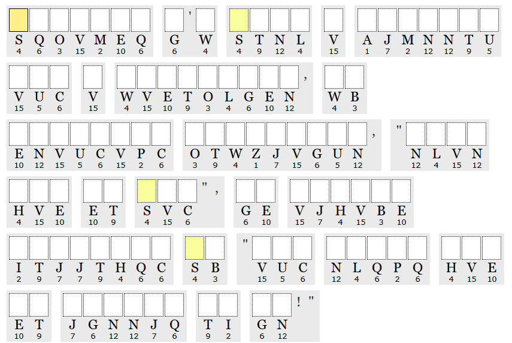
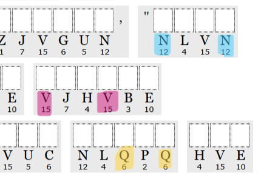
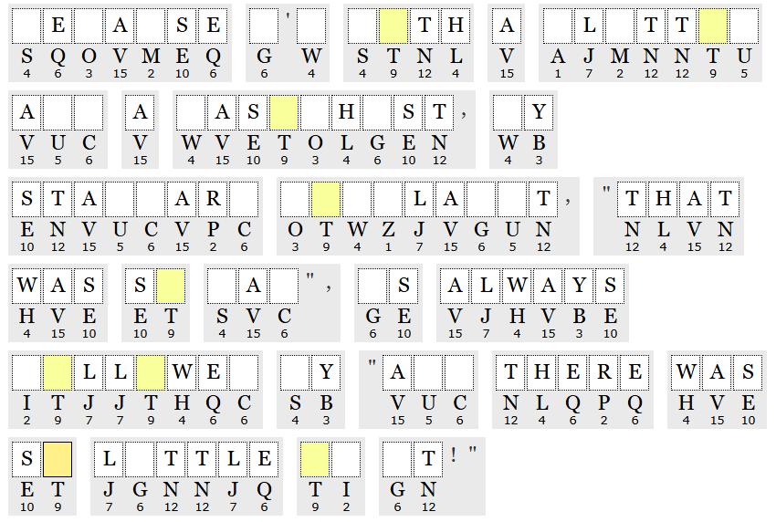
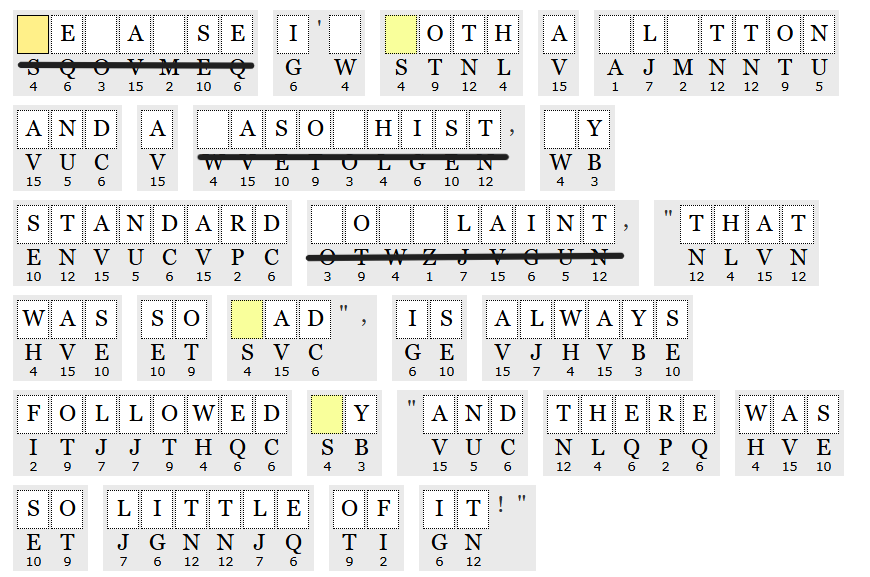
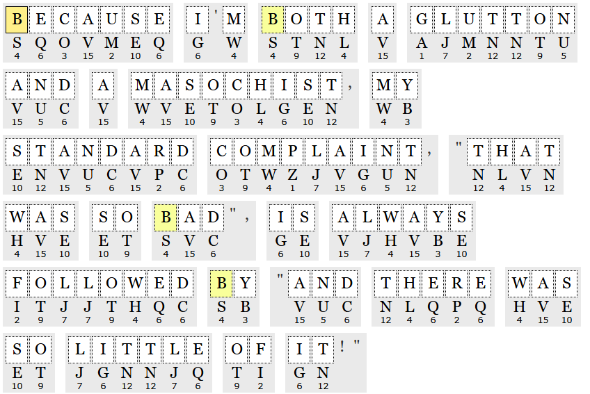

If you've ever seen a cipher, chances are you've probably used a site like dcode or cryptii to solve it. dcode can solve most common ciphers and puzzles on the internet, and it can even find which cipher you're trying to identify here! This isn't really used often in Science Olympiad however, as we most often already have the means to solve the cipher.
I often use this website to help practice for this type of cipher called an Aristocrat Cipher1. Usually, I try to break these puzzles by looking for patterns in the letters (i.e. if a letter repeats in the third and fifth spot of a 5-letter word it is most likely e in a word such as "there"). If it does get too hard, you can always just press the Hint me! button to see the vowel locations or reload the page to get a different puzzle.
This site I don't recommend as much, but it's still useful for other ciphers, such as a Checkerboard Cipher2 or a Fractionated Morse3. You can also use it for other Science Olympiad events, though the answers of the questions it provides can often be wrong.
This list includes the ciphers referenced above. This is done in the context of the Codebusters C event. Also, this is how I understand the ciphers to be like; the explanations may not be 100% correct! Please see the linked webpages.
An Aristocrat Cipher replaces the plaintext (original text) with ciphertext (encrypted text) through the use of a substitution alphabet shifted by a keyword. However, Puzzle Baron uses what's termed as a "Random" or "Plain" Aristocrat, where the substitution alphabet is arranged in a random order instead. You can find more information here.
Instead of using a typical substitution alphabet, Checkerboard Ciphers (commonly known as Polybius square ciphers outside of Science Olympiad) use a 5x5 grid (the Polybius square) as their substitution alphabet and use two letters (or numbers) as the substitution for the plaintext character instead of just one letter. You'll often see the grid's rows and columns correspond to numbers online, but Codebusters uses 5-lettered keywords instead.
Note: 5x5 Polybius squares only have 25 squares, 1 short of the 26 seen in the English alphabet. To compensate for this, the letters I and J usually represent the same square.
You might've heard of Morse Code and tried to hide a message in it once or twice. As it turns out, we can take that message-hiding ability one step further by using a Fractionated Morse Cipher! Instead of only using two characters, . and -, Fractionated Morse Ciphers use three, now including × as well. × basically serves as white space; one × symbol is interpreted as a separation between letters, while two × symbols are interpreted as a space between words (in normal morse code this would be akin to /).
Fractionated Morse acts like a combination of an Aristocrat and Morse Code; the substitution alphabet is shifted through the use of a keyword, and each letter represents a string of three characters (., -, or ×). The ciphertext is replaced with these three characters, and, if you did it correctly, you can convert the substituted morse characters into plaintext (if this didn't make sense you can always look at this explanation instead).
Let's say, for whatever reason, you encounter an Aristocrat Cipher, and you would like to know what it means. The phrase "sqovmeq g'w stnl v ajmnntu..." doesn't look very readable now, does it?

How do you even approach something like this?
Well, one thing you can do is to look for letter patterns. If we look to the right area of the ciphertext, we can find the strings NLVN, VJHVBE, and NLQPQ. They seem random at first, until you notice how the letters inside them repeat.

As mentioned above, letters that repeat in the 3rd and 5th letter of a 5-letter word tend to be E, and the 5-letter word in question likely ends in -ere. We can predict that the 2nd letter might be H, but we don't know if the first letter is T or W. Let's look at the other words.
There aren't a lot of 4-letter words that (see what I did there) both start and end with the same letter, and, given the fact that the frequency of the letter N is high, we can conclude N corresponds to the letter T and that NLVN corresponds to THAT. Using this information, we can also find that NLQPQ is the word THERE (Note: You shouldn't rely on frequencies too much. E, T, and A are the most common letters in the English language, but you might notice that E isn't too common in this cipher (6 occurances only!))
As for the VJHVBE string, we can get information from the other words to discern that V is A. What word fits the pattern A__A__?
Once we fill out those three words, we can look for the letter substitutions we know and fill those out too.

Alright, now we have a lot more information to use. Look to the left. Recognize any words?
You might not get the first two words, but we can get the last, which is LITTLE. You might also see that the letter C repeats in the pattern ENVUCVPC. We can use this to get the word STANDARD. We can also use the information that C corresponds to D to get the word FOLLOWED.

Try it yourself! Now that we filled in most of the letters, can you tell which words the underlined spaces are supposed to represent?
After all those steps, we get the final, unencrypted quote:
